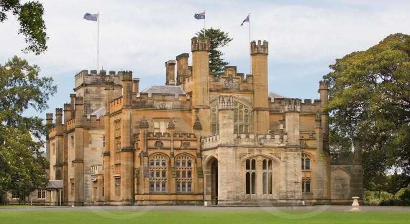
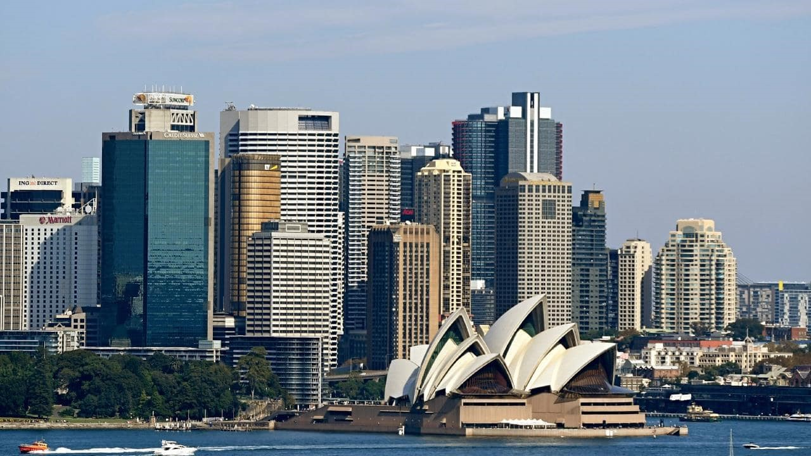
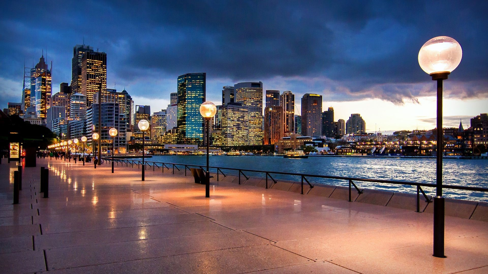

One of the most multicultural cities in the world, Sydney is way ahead in
popularity amongst visitors than
Australia’s lesser-known capital city—Canberra. Sydney is the state capital of New South Wales and also
the
most populous city in Australia and Oceania with an estimated population of 5,230,330. Located on
Australia's east coast, the metropolis surrounds Port Jackson and extends about 70 km on its periphery
towards the Blue Mountains to the west, Hawkesbury to the north, the Royal National Park to the south and
Macarthur to the south-west. The city is made up of 658 suburbs, 40 local government areas and 15
contiguous
regions and the residents are known as "Sydneysiders".
Despite being one of the most expensive cities in the world, Sydney ranks five in
the list of top ten most livable cities in the world. It is classified as an Alpha+ World City by
Globalization and World Cities Research Network, indicating its influence in the region and throughout the
world. Ranked eleventh in the world for economic opportunity, Sydney has an advanced market economy with
strengths in finance, manufacturing and tourism.
The city is among the top fifteen most-visited cities in the world, with millions
of tourists coming each year to see the city's landmarks. Boasting over 1,000,000 ha (2,500,000 acres) of
nature reserves and parks, its notable natural features include Sydney Harbour, the Royal National Park,
Royal Botanic Garden and Hyde Park, the oldest parkland in the country. Built attractions such as the
Sydney Harbour Bridge and the World Heritage-listed Sydney Opera House are also well known to
international visitors. The main passenger airport serving the metropolitan area is Kingsford-Smith
Airport, one of the world's oldest continually operating airports. Established in 1906, Central station,
the largest and busiest railway station in the state, is the main hub of the city's rail network.

Government
Type: Federal or Commonwealth
Lord Mayor: Clover Margaret Moore
Australia's Head of State: The Queen of Australia, Her Majesty Queen Elizabeth II

Area
Area :
Australia is spread over an area of 7.692 million square kilometer, with Sydney occupying 12,368 square
kilometers.
Language: Though Australia has no official language, English is regarded as the de facto national language
and is spoken by the majority of the population.
English is the most commonly spoken language in Australia. Currency: Australian Dollar 1 Australian Dollar = 48.70 Indian Rupee Climate (in June): Minimum Temperature: 10 degrees Celsius or 50 F Minimum Temperature: 10 degrees Celsius or 50 F Maximum Temperature: 18 degrees Celsius or 64 F Average Temperature: 14 degrees Celsius or 57 F

Getting Around the City
Even with its diverse suburbs and attractions, Sydney is an easy city to get around.
Public transport is used across Australia by locals, commuters and visitors alike, and Sydney is no exception.
To use public transport including buses, trains, ferries and light rail in Sydney, one needs to purchase an
Opal card. The Opal card can be purchased from participating newsagents, post offices, convenience stores and
supermarkets. Just look for the Opal symbol. The Opal card can also be bought at the time of arrival at the
domestic and international airport terminal stations. The Opal network includes services in Sydney, the Blue
Mountains, Central Coast, Hunter Valley, Illawarra and
the Southern Highlands.
Sydney has a comprehensive bus network. Many buses travel through the city from Wynyard and Circular Quay, and
beyond to Sydney’s suburbs, beaches and regional areas. There are regional bus services that travel to the Blue
Mountains, and along the coast to other Australian towns and cities,
departing from Eddy Avenue in front of Central Station. One can also hop onto a Big Bus Tour of Sydney, which
stops at 33 destinations across the city, with services running every 20-30 minutes, first departing from Circular
Quay.
Sydney’s light rail network goes from Central Station to Dulwich Hill. It’s most
convenient for reaching Chinatown, The Powerhouse Museum in Ultimo, The International Convention Centre in Darling
Harbour,
and The Star Casino and the Australian National Maritime Museum in Pyrmont and the Tramsheds in Forest
Lodge.
The City Circle is the train network that runs a loop around the city, stopping at the
following stations: Central, Museum, St James, Town Hall, Wynyard, Circular Quay and Martin Place. This is the
easiest way to get around the city centre.